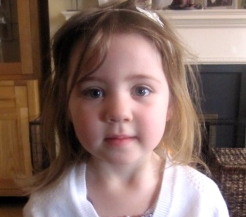

Home
Who are Aoife's Clown Doctors?
Aoife’s Clown Doctors are professional actors, trained to work in the hospital setting. They do the most amazing work visiting and entertaining vulnerable and sick children on the wards at Crumlin and Temple Street Hospitals. These children are in unfamiliar environments surrounded by medical personnel. Aoife’s Clown Doctors transport them to a world of wonder and fun, if even for just a short time. This is not only beneficial for the children but also the stressed and anxious parents who get to see their child laughing.
Aoife’s Clown Doctors were being solely funded by ‘The Friends of Aoife Hendrick’ which was set up in memory of Aoife Hendrick. Aoife was in Crumlin hospital in the summer of 2012 after being diagnosed with Leukaemia. She absolutely loved the Clown Doctors and her parents were delighted to see her so happy during these special visits.
Aoife died aged 5 on August 30th 2012.
Aoife’s Clown Doctors Ireland became a registered charity in February 2019 and Aoife’s family are thrilled that the legacy of their bright bubbley little girl lives on through the smiles and laughter of other children.
Aoife’s Clown Doctors now hope to expand to the Regional hospitals throughout Ireland and spread their madcap children’s comedy nationwide. We appreciate all the support people can offer to help us spread joy & laughter to the children in Ireland’s hospitals.